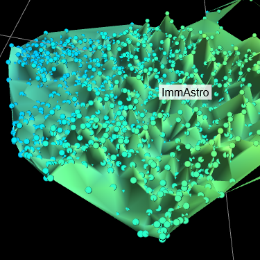
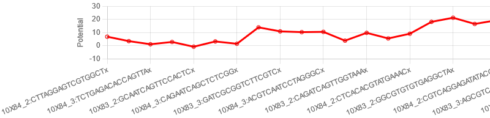

最終更新: 2023 年 7 月 31 日
CellMapViewer は、細胞地図の三次元での可視化のための Web プログラムです。CSV 形式の入力テキスト ファイルから、座標や特徴量をもつ細胞群のデータを読み込ませると、Delaunay 三角形分割が行われ、その結果が可視化されます。
可視化後、GUI から次の操作が可能です。
また、GUI メニューから次に示す各種の設定が可能です。
加えて、選択中の細胞に関して、各細胞の情報や、細胞群の座標や特徴量の平均などの統計量が自動的に表示されます。
マニュアルは日本語版と英語版があります。
クリックすると入力ファイルを選択するダイアログが開きます。入力ファイルをドラッグ & ドロップすることも可能です。表示中のファイルがある場合、ファイル名がこのエリアの上に表示されます。
各種設定や操作を行います。[Threshold]、[Z-axis]、[Color]、[Size]、[View]、[Config]、[Drag action]、[Rotation] の詳細は「設定の変更」を、[Reset camera] の詳細は「視点の操作」を、[Path] の詳細は「経路の探索」を、[Save image] の詳細は「画像の保存」をご覧ください。[Close (Open) Controls] をクリックするとメニューを折りたたむ (開く) ことができます。
マウスによる操作が可能です。右下角 (Safari を除く) か下の水平線をドラッグすると縦幅を調整できます。詳細は「視点の操作」をご覧ください。
選択中の各細胞の情報や細胞集団の統計量、経路上の特徴量のグラフが表示されます。右下をドラッグすると縦幅を調整できます。詳細は「選択中の細胞の情報の表示について」をご覧ください。Selected cells 右側に表示される細胞数をクリックすると、表の内容が CSV 形式で保存されます。
次の条件を満たしている必要があります。
上記を満たしていない場合、読み込みエラーとなったり、正しく読み込めなかったり、読み込み後に文字化けしたりします。なお、空行や空白文字のみの行は読み込み時にスキップされます。なお、ヘッダー文字列は、大文字/小文字および空白文字の有無は区別しません。
また、本プログラムの js フォルダ内にある "initialData.js" ファイルに、指定されたフォーマットで入力ファイルの内容を記載しておくと、プログラムの起動時に入力内容が自動で可視化されます。"initialData.js" ファイルのフォーマットは次の通りです。
ファイル選択エリアから入力ファイルを選択すると、現在の設定に基づいて自動で可視化が行われます。

[Color] > [Surface] および [Color] > [Cells] で選択したカラー マップと特徴量の最大値、最小値が表示されます。
Delaunay 三角形分割の結果のうち、[Threshold] で設定した値から算出された特定の三角形を除いた三角形が描画されます。詳細は「可視化の仕様」をご覧ください。面の色は [Color] > [Surface] > [Feature] で指定された特徴量が [Color] > [Surface] > [Min]/[Max] の範囲内で、[Color] > [Surface] > [Color map] で指定したカラー マップに基づいて表示されます。点群の色は面とは独立に、[Color] > [Cells] > [Feature] で指定された特徴量が反映されます。
入力データに「Annotation」列が含まれる場合、[View] に選択できる「Annotation」列がリスト形式で表示されます。「Annotation」列を指定すると、各アノテーションに属する細胞集団の平均の位置にアノテーションのラベルが表示されます。クリックするとそのアノテーションに属する細胞をまとめて選択できます。Shift または Ctrl (Windows) もしくは Command (mac) キーを押しながらクリックすると、それまでの選択対象に追加されます。
次の図は展開した状態のメニューです。

以下、各設定項目について説明します。
三角形分割の三角形を除去する閾値を指定します。詳細は「可視化の仕様」をご覧ください。
細胞を表す点の z 座標に用いる特徴量を [Feature] で、スケールを [Scale] で指定します。[Grid] ではグリッドの z 座標を設定します。
細胞地図の面の色を指定します。[Set min/max to feature range] ボタンから、[Min]/[Max] をそれぞれ [Feature] の最小値/最大値に設定できます。詳細は「可視化された細胞地図の見方」をご覧ください。
[Surface] と同様の項目が展開されます。細胞を表す点の色の設定を行います。
細胞地図のメッシュ (三角形分割した三角形の辺) の色を指定するカラー ピッカーです。
細胞地図上に表示したストリームラインの色を指定するカラー ピッカーです。
細胞地図の等高線の色を指定するカラー ピッカーです。
細胞地図表示エリアの背景色を指定するカラー ピッカーです。
アノテーションのフォント サイズを指定します。
細胞を表す点のサイズを指定します。
選択中の細胞を表す点のサイズを指定します。
経路の太さを指定します。
等高線の太さを指定します。
アノテーションのラベルの表示/非表示を切り替えます。
アノテーションの種類を切り替えます。
面の表示/非表示を切り替えます。面用のカラー バー表示も連動します。
メッシュの表示/非表示を切り替えます。
細胞を表す点の表示率を変更します。細胞用のカラー バー表示も連動します。
選択中の細胞を強調するかどうかを切り替えます。
ストリームラインの表示/非表示を切り替えます。
ストリームラインの表示に用いる速度ベクトルの種類を切り替えます。
等高線の表示本数を変更します。
グリッドの表示/非表示を切り替えます。
前述の設定項目全てを初期値に戻します。
設定ファイルを読み込むダイアログを表示し、選択されたファイルを読み込みます。
JSON 形式の設定ファイルをダウンロードします。
z 座標を考慮しない探索を行います。詳細は「経路の探索」をご覧ください。
z 座標を考慮した探索を行います。詳細は「経路の探索」をご覧ください。
z 座標を考慮した探索を行うときのパラメータを変更します。詳細は「経路の探索」をご覧ください。
細胞地図表示エリアでマウスの左ボタンを押しながらドラッグしたときの挙動を指定します。詳細は「視点の操作」および「ドラッグによる選択」をご覧ください。
細胞地図表示エリアでマウスの左ボタンを押しながらドラッグしたときの回転軸を指定します。詳細は「視点の操作」をご覧ください。
細胞地図表示エリアでのマウス操作により、回転、ズーム、パンが可能です。最初の視点位置に戻すには、[Reset camera] をクリックします。
[Drag action] が [Camera rotation] のときに限り、マウスの左ボタンを押しながらドラッグすることで細胞地図を回転できます。[Rotation] が [Current coordinate] の場合は、そのときの視点を中心として細胞地図が回転します。[Rotation] が [Origin] の場合は、細胞地図の原点を中心として細胞地図が回転します。
ホイールによるスクロールでズーム イン/アウトができます。
マウスの右ボタンを押しながらドラッグすることで視点を画面と平行に移動できます。
クリックやドラッグにより細胞の選択が可能です。選択された細胞は次の図のように赤く強調表示されます。細胞が選択されている状態で別の場所をクリックしたり、細胞の表示率を変更すると、細胞の選択が解除されます。

細胞を表す点をクリックすると、その細胞だけが選択された状態になります。Shift または Ctrl (Windows) もしくは Command (mac) キーを押しながらクリックすると、それまでの選択対象に加えて新たにクリックされた細胞が選択されます。
ドラッグすると、矩形の範囲内にある細胞が選択された状態になります (ただし、[Drag action] が [Rectangle selection] のときに限ります)。Shift または Ctrl (Windows) もしくは Command (mac) キーを押しながらドラッグすると、それまでの選択対象に加えて新たに矩形の範囲内の細胞が選択されます。
1 つのアノテーションに属する細胞をまとめて選択することができます。方法は「アノテーション」をご覧ください。
選択中の細胞の情報が選択中の細胞の情報に表として表示されます。入力データ中に存在していた座標や特徴量などの情報が 1 細胞につき 1 行表示されるほか、表の最後に Min. (最小値)、Max. (最大値)、Mean (平均)、Variance (分散)、SD (標準偏差)、CV (変動係数) といった統計量が表示されます。
[Path] 内のコマンドを用いて、点 (細胞) を 2 個選択した状態からその 2 点間を結ぶ最短経路を探索することができます。探索対象は現在表示されている辺です。距離として xy 平面上でのユークリッド距離が用いられます。経路が見つかった場合、経路が赤い線で表示され、経路上にある細胞が選択された状態になります。経路が見つからなかった場合、その旨がダイアログで通知されます。
[Find 2D path] をクリックすると実行されます。x、y 座標のみを考慮した探索が行われます。
[Find 3D path] をクリックすると実行されます。z 座標の増減を考慮して経路が探索されます。z 座標が減少する場合に比べ、z 座標が増加する場合の方が、探索の時の重みが大きくなるアルゴリズム使用して探索を行います。[Register for 3D path] で設定する register の値は、減少時と増加時の重みの比を制御する値です。register の値が 0 のときの探索は、z 座標を考慮しない探索に相当します。
経路を表示した状態で [Register for 3D path] を変更すると、register の値を変更して再計算し、新たに求めた経路を表示します。なお表示中の経路が、z 座標を考慮しない探索を行った場合の状態であっても、register の値を変更して、z 座標を考慮する探索を行います。
経路が見つかった場合には、選択中の細胞の情報欄の最下部に、下図のような経路上の細胞を横軸、特徴量を縦軸に持つ折れ線グラフが表示されます。グラフの表示中に [Z-axis] の [Feature] を変更することで、表示される特徴量を動的に変更することも可能です。
[Save image] をクリックすると細胞地図表示エリアの画像を PNG 形式でダウンロードできます。メニューは出力されません。